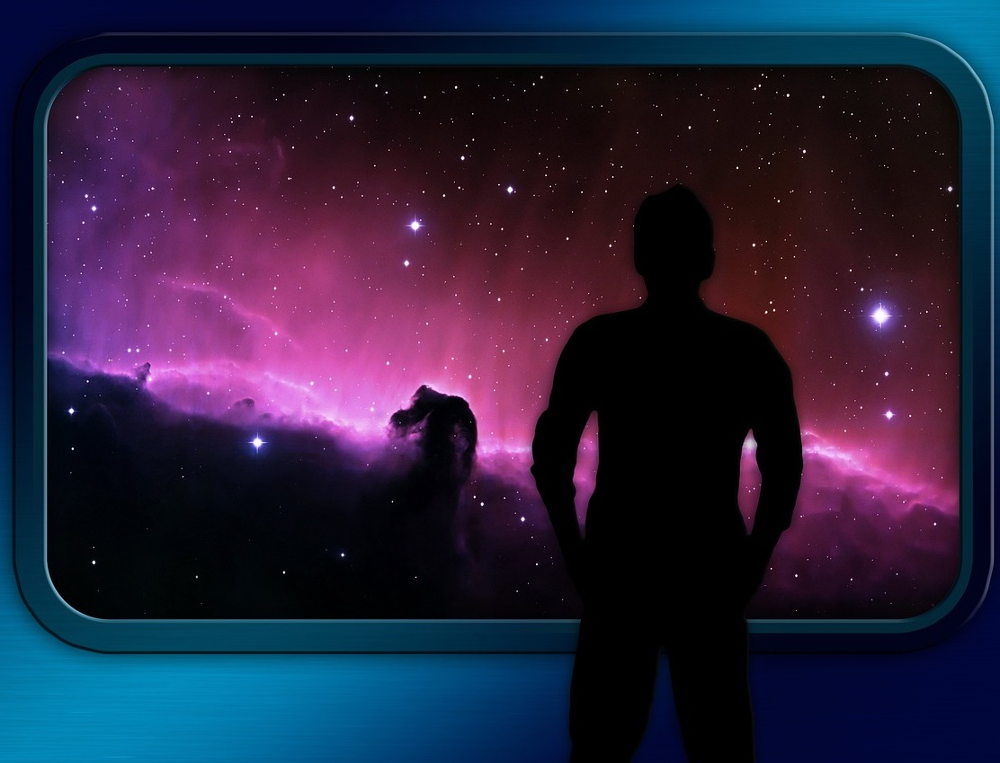

Pierwszym obserwatorem Wszechświata był najprawdopodobniej człowiek, który po skierowaniu wzroku w górę, zapewne niezmiernie zachwycił się, kiedy dostrzegł malutkie światełka na nocnym niebie, zastanawiając się czym one są. Podziwu nad wielością ciał niebieskich doświadcza chyba każdy, kto kiedykolwiek leżąc w nocy na trawie zachwyca się widokiem roziskrzonego nieba, nieświadomie pogłębiając tym samym pierwsze objawy bezsenności. Przez lata, proporcjonalnie do rozwoju naszej cywilizacji, zmieniały się techniki obserwacji Kosmosu. Opisując rzeczywistość bardziej precyzyjnie, zreformowaliśmy także znaczenie samego słowa „obserwacja”. Obecnie przyglądając się temu zagadnieniu, możemy przeglądać tysiące źródeł, opowiadających o technikach, sposobach obserwacji i, wielu innych aspektach tego zagadnienia. Kiedy w 1957 roku w ZSRR wyniesiono w przestrzeń kosmiczną pierwszego sztucznego satelitę Ziemi, pojawiły się nowe, ogromne możliwości.
Pomimo dużo mniejszych możliwości technologicznych starożytnych mieszkańców naszej planety, ich badania zaszły całkiem daleko. W rozwiniętych cywilizacjach budowano pierwsze obserwatoria astronomiczne, które często były miejscem kultu Słońca czy Księżyca i wiele kultur oddawało im boską cześć. Większość wczesnych obserwacji służyła sporządzaniu katalogów gwiazd i planet, które nadal nazywano gwiazdami, ale określano je jako gwiazdy błędne, z powodu ich nietypowego ruchu względem pozostałych gwiazd. Ponadto wyliczono 29-dniowy cykl faz Księżyca, a Babilończycy odkryli nawet cykliczność zaćmień księżycowych zwaną saros. Znaczny rozwój astronomii nastąpił w starożytnej Grecji, gdzie Arystarch z Samos wyliczył względne rozmiary i wzajemne odległości Słońca, Ziemi i Księżyca oraz jako pierwszy zaproponował model heliocentryczny Wszechświata. Hipparchos z Nikei odkrył precesję, a do największych osiągnięć starożytnej Grecji z pewnością należy Mechanizm z Antykithiry, który jest starożytną wersją zegara astronomicznego.
Rewolucją w astronomii obserwacyjnej było powstanie teleskopu, który pomaga nam spojrzeć głębiej w kosmos, niż pozwala nam na to ludzkie oko. Nie jest pewne kto wynalazł teleskop, ale pierwszym, który masowo wykorzystywał ten przyrząd był Galileusz. Na początku XVII wieku ten włoski astronom przy pomocy teleskopu odkrył między innymi cztery księżyce Jowisza (zwane obecnie księżycami galileuszowymi), góry księżycowe, a także fazy Wenus, które potwierdziły teorię heliocentryczną Kopernika.
Obecnie, pisząc o obserwacjach, nie uwzględniamy tylko rejestrowania światła widzialnego przy pomocy wzorku, ale również innych fal elektromagnetycznych, z których istnienia zdaliśmy sobie sprawę dopiero w XIX wieku. Dzisiejsze możliwości i wiedza pozwalają nam na rozszerzenie wachlarza obserwacji. Jednakże obserwacje w zakresie światła widzialnego są nadal bardzo potrzebne i popularne.